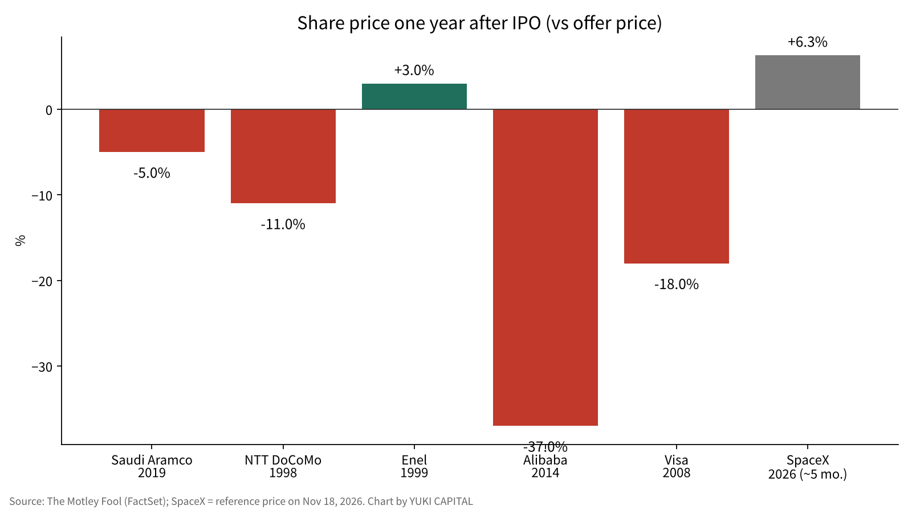
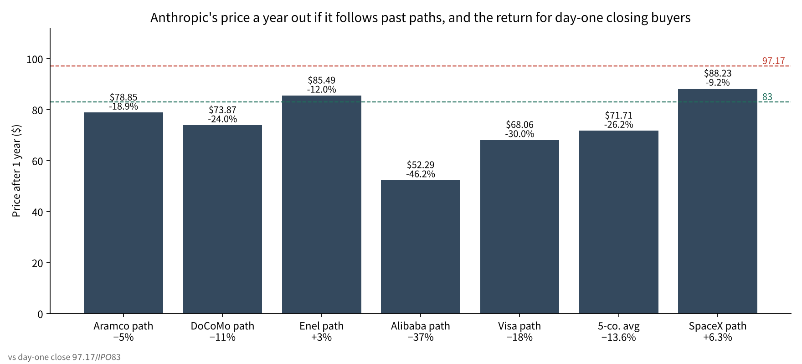

What happened after the biggest IPOs ever? Testing Anthropic's $83 offer price against Saudi Aramco, Alibaba and SpaceX one year on
Anthropic began trading on Nasdaq on November 19, 2026, closing its first day at $97.17, up 17.07% from its $83 offer price. It raised about $81.3 billion, more than SpaceX's $75 billion in June, making it the largest IPO in U.S. history [3][10].
The first day of a big listing usually looks glamorous. What really matters is the year that follows.
This article asks: were the largest IPOs in history trading above their offer price one year later, and what happened to people who bought at the first-day close?

- Of the five largest IPOs (inflation-adjusted), only Enel was above its offer price one year later (+3%); the five-company average was −13.6%.
- SpaceX is up 6.3% from its $135 offer price after about five months, but down 10.8% from its $160.95 first-day close, so day-one buyers are under water.
- If Anthropic tracks the five-company average, it would be at $71.71 a year out and day-one closing buyers would be down 26.2%. Beating that would take a stronger first year than any past giant managed.
Question and background
An IPO (initial public offering) is when a company first sells shares to the public and lists them on an exchange. The offer price is set by the company and its banks before the sale, and first-day trading starts from that price.
Researchers call a big first-day jump "underpricing". Because the company is paid at the offer price, the first-day gain goes to the investors who were allocated shares, not to the company. The stronger the first day, the more money the company effectively left on the table.
The gap between the first trade and the offer price is the first-day return. Academic data show that the average first-day return on U.S. IPOs from 1980 to 2025 was 18.8% [1]. Anthropic's 17.07% is almost exactly that average.
Long-run IPO performance is less flattering. In the same data, three-year buy-and-hold returns on IPOs have on average trailed comparable listed companies [2]. People who got shares at the offer price and people who bought on day one see very different results.
The bigger the IPO, the more attention it draws before the sale. When expectations are priced in early, the following year often becomes a period of closing the gap between hope and reality.
2026 became the year with two record IPOs in six months: SpaceX in June ($75 billion) and Anthropic in November (about $81.3 billion) [3][9]. Each is roughly three times the previous record, Saudi Aramco's $25.6 billion in 2019 [8].
Data and method
The comparison set is the five largest IPOs in history by inflation-adjusted proceeds: Saudi Aramco (2019), NTT DoCoMo (1998), Enel (1999), Alibaba (2014) and Visa (2008). In 2026 dollars they raised $38 billion, $37 billion, $37 billion, $35 billion and $28 billion [7].
Performance is measured from the offer price to the closing price one year after listing, adjusted for splits, using FactSet data compiled by The Motley Fool [7]. Offer prices can be checked in each company's final prospectus (424B4) [4][5][6].
SpaceX has not been listed for a year, so its reference price of $143.50 on November 18, 2026 is shown as "about five months" [11]. Its offer price was $135 and its first-day close $160.95 [9]. For Anthropic the starting point is the first-day close of $97.17 [10].
The estimate is simple: apply each of the five companies' one-year return to Anthropic's $83 offer price to get an indicative price a year out, then calculate the gain or loss for someone who bought at the $97.17 first-day close.
Results
The table summarizes the five companies' performance.
| Company | Listed | Proceeds (2026 $) | 3 months | 1 year |
|---|---|---|---|---|
| Saudi Aramco | 2019 | $38B | −21% | −5% |
| NTT DoCoMo | 1998 | $37B | +19% | −11% |
| Enel | 1999 | $37B | −5% | +3% |
| Alibaba | 2014 | $35B | +20% | −37% |
| Visa | 2008 | $28B | +14% | −18% |

Only Enel (+3%) was above its offer price after a year. The other four were below; the average was −13.6% and the median −11%. Alibaba was up 20% after three months but down 37% after a year [7].
Facebook in 2012 ($16 billion raised), though outside the top five, followed the same pattern. It fell 47% from its $38 offer price within three months, and day-one buyers lost roughly a third in the first year [8]. SoftBank Corp, the telecom arm, opened its listing in 2018 with a 15% first-day fall [8].
Being up after three months did not mean being up after a year. DoCoMo, Alibaba and Visa were all higher at three months, yet all three were below their offer prices a year later [7]. Early momentum says little about the first-year result.
SpaceX is up 6.3% from its offer price after about five months, but down 10.8% from its $160.95 first-day close [9][11]. The gap between those who were allocated shares and those who bought in the market on day one shows up here too.
Sensitivity analysis
I tested how much Anthropic's one-year picture changes depending on which past path it follows, applying each company's one-year return to the $83 offer price.

| Path | 1-year return | Price after 1 year | Day-one close buyer |
|---|---|---|---|
| Enel | +3% | $85.49 | −12.0% |
| SpaceX (~5 mo.) | +6.3% | $88.23 | −9.2% |
| Aramco | −5% | $78.85 | −18.9% |
| DoCoMo | −11% | $73.87 | −24.0% |
| 5-company avg | −13.6% | $71.71 | −26.2% |
| Visa | −18% | $68.06 | −30.0% |
| Alibaba | −37% | $52.29 | −46.2% |
Even on the best path, Enel's, a day-one closing buyer would be down 12.0% after a year. On the worst, Alibaba's, the price would fall to $52.29 and day-one buyers would lose almost half.
For a day-one closing buyer to break even after a year, the stock needs to be up at least 17.07% from the offer price. None of the five past giants cleared that bar after one year [7].
Discussion
There is an opposing view: deal size has little to do with later performance. Over the long run Visa is up 1,912% from its offer price and Alibaba 48%, and sector and business strength are said to explain the difference [7][8].
Energy and telecom names did lag, while financials and technology had risen sharply by year five [8]. Anthropic is an AI company in a different sector from all five, so applying their paths has clear limits.
Some experts advise riding out the early volatility and reassessing after the company has reported earnings a few times [8]. The idea is that prices settle once lock-ups expire, more shares trade, and real results become visible.
This analysis has three limits. First, there are only five companies, so chance cannot be ruled out. Second, one-year returns mix in the overall market after each listing. Third, the figures exclude dividends and currency effects.
There are two checks. Will Anthropic close above $83 or above $97.17 on November 19, 2027? And how will the price move around the dates when lock-ups on major shareholders expire?
Conclusion
The largest IPOs in history do not reliably trade above their offer price a year later. Four of the top five were below, with an average of −13.6%.
Early momentum is not reliable either. Of the three that were up after three months, none was still above its offer price after a year.
It is especially hard on people who bought at the first-day close. Whichever past path Anthropic follows, someone who paid $97.17 on day one would be at a loss after a year on these numbers.
When looking at a big listing, it helps to separate the first-day pop from the one-year result. A 17% first day says as much about how the offer was priced as about the company's value.
A big listing rewards people who can let time work for them. Some companies with a poor first year were clear winners over ten years. Deciding the time horizon before buying matters most.
How I see it
I live in Japan, and I have long seen Anthropic as a company I would hold for 10 or 20 years once it listed. I have already bought in my personal account, but in the account I publish as YUKI CAPITAL I have not bought a single share yet.
My rule for the published account is to start with 500 shares if the price falls below the $83 offer price. This check confirmed that big IPOs often give back their offer price within the first year. So I will not chase the first-day heat; I will wait for that line.
References
- Jay R. Ritter, University of Florida「Initial Public Offerings: Updated Statistics」（2026年1月） https://site.warrington.ufl.edu/ritter/files/IPO-Statistics.pdf
- Jay R. Ritter「IPOs: Long-run Returns」（2025年） https://site.warrington.ufl.edu/ritter/files/IPOs-long-run-returns-on-IPOs.pdf
- Anthropic「Anthropic prices initial public offering」（2026年11月18日） https://www.anthropic.com/news/anthropic-prices-initial-public-offering
- U.S. SEC EDGAR「Alibaba Group Holding（CIK 1577552）の目論見書 424B4」（2014年9月） https://www.sec.gov/cgi-bin/browse-edgar?action=getcompany&CIK=0001577552&type=424B4
- U.S. SEC EDGAR「Facebook, Inc.（CIK 1326801）の目論見書 424B4」（2012年5月） https://www.sec.gov/cgi-bin/browse-edgar?action=getcompany&CIK=0001326801&type=424B4
- U.S. SEC EDGAR「Visa Inc.（CIK 1403161）の目論見書 424B4」（2008年3月） https://www.sec.gov/cgi-bin/browse-edgar?action=getcompany&CIK=0001403161&type=424B4
- The Motley Fool「What Happened After the 5 Biggest IPOs in Stock Market History」（2026年5月13日・FactSet のデータ） https://www.fool.com/investing/2026/05/13/what-happened-after-5-biggest-ipo-stock-spacex/
- The Motley Fool「The biggest IPOs ever」（2026年） https://fool.com/research/biggest-ipos-ever/
- NPR「SpaceX IPO makes history as largest ever. Stock gains 19% on first day」（2026年6月12日） https://npr.org/2026/06/12/nx-s1-5855004/stock-ai-spacex-ipo-elon-musk
- CBS News「Anthropic shares gain 17% on first day of trading after record IPO」（2026年11月19日） https://www.cbsnews.com/news/anthropic-ipo-nasdaq-debut-claude-ai/
- 野村證券 預り資産（SpaceX の参考時価・2026年11月18日） https://yuki-capital.com/numbers/capital/
Charts by YUKI CAPITAL. Photo: Unsplash
I record my daily numbers and decisions on X.